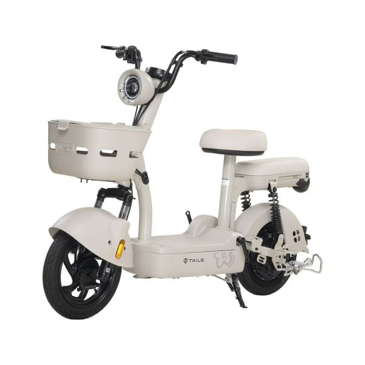
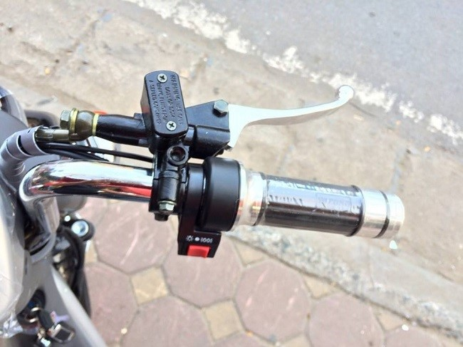
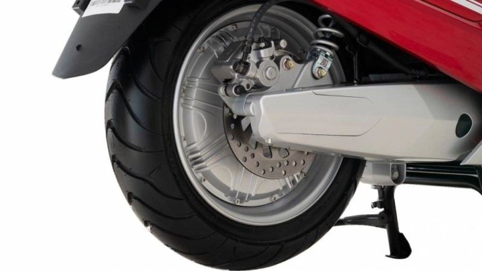

Dịch vụ sửa chữa xe điện tại nhà nhanh chóng, uy tín – EBikeShop.com

Xe điện hiện nay được sử dụng khá phổ biến và dễ dàng bắt gặp khi tham gia giao thông vì sự tiện ích mà sản phẩm mang lại cho người dùng. Bên cạnh những ưu điểm vượt trội khi sử dụng thì xe điện đôi lúc cũng có những vấn đề cần phải được sửa chữa . Một số vấn đề có thể gây khó khăn cho người dùng và buộc phải sửa chữa xe điện tại nhà. Vậy đâu là lý do dẫn đến tình trạng này và dịch vụ sửa chữa xe điện tại nhà nhanh chóng, uy tín – EBikeShop.com sẽ giúp giải quyết như thế nào? Cùng theo dõi bài viết dưới đây nhé.
Tại sao khách hàng cần sửa chữa xe điện ngay tại nhà?
Những năm gần đây, xe điện được xem như là một phương tiện giao thông mới nổi được khá nhiều người dùng ưa chuộng và sử dụng. Xe điện mang đến nhiều tiện ích cho người như như tiết kiệm chi phí bảo trì, bảo dưỡng; mức chi trả cho tiền điện thấp hơn so với xe xăng; quãng đường di chuyển và tốc độ tương đối ổn định và phù hợp; hạn chế ô nhiễm không khí, ô nhiễm tiếng ồn… góp phần bảo vệ môi trường và cải thiện cuộc sống tốt hơn.
Lợi ích là thế nhưng trong một vài tình huống xe điện bị gây hư, không hoạt động hay hao mòn dẫn đến kém an toàn khi sử dụng thì người dùng cần phải mang phương tiện đi sửa chữa để khắc phục sự cố và tăng mức an toàn cho người dùng.
Xe điện nếu hư hỏng liên quan đến hệ thống động cơ điện thì chắc hẳn sẽ rất khó khăn cho người dùng có thể đưa xe đến nơi sữa chữa hay trung tâm bảo hành nếu như khoảng cách địa lý quá xa, gây bất lợi. Giải pháp tối ưu là sử dụng dịch vụ sửa chữa xe điện ngay tại nhà để được hỗ trợ tốt nhất mà không quá mất thời gian cũng như công sức.
Các lý do khiến xe điện dễ bị hư hỏng và khó khăn khi đi sửa chữa
Một số lý do chính khiến cho xe điện dễ bị hư hỏng và gây nên những khó khăn, bất lợi cho người dùng khi sửa chữa:
Bình ắc quy bị hư hỏng
Bình ắc quy là nơi cung cấp nguồn điện để giúp cho hệ thống động cơ xe hoạt động. Sau một thời gian dài sử dụng, bình ắc quy có thể vì một lý do nào đó mà hoạt động kém hiệu quả và hư hỏng luôn thiết bị, xe không thể di chuyển được hoặc di chuyển kém ổn định.
Bình ắc quy hư có thể là do người dùng thường xuyên sử dụng phương tiện trong môi trường ẩm ướt, nước mưa thấm lâu ngày và không được sử lý tốt đã gây nên tình trạng chập mạch ắc quy, dẫn đến hư hỏng.
Một trong những nguyên nhân khác là do tuổi thọ ắc quy suy giảm sau quá trình sử dụng lâu dài hoặc do sử dụng sạc điện cho xe không đúng cách. Chung quy có thể khiến cho ắc quy bị chai pin, không thể cung cấp nguồn điện tốt cho động cơ hoạt động.
Tay ga không hoạt động
Tay ga cũng có thể là nguyên nhân khiến cho xe điện dễ gặp phải những hư hỏng không mong muốn. Tay ga bị hỏng khiến cho việc vận hành xe trở nên khó khăn hoặc không hoạt động, không thể đưa xe đến trung tâm bảo hành hoặc nơi sửa chữa.

Việc tay ga hư hỏng cũng có thể là do sử dụng lâu ngày bị lờn, bị chập mạch hay thậm chí bị vào nước gây nên.
Động cơ không hoạt động
Nếu xe trong tình trạng lên nguồn, đề ổn định, tay ga vẫn hoạt động tốt mà xe vẫn không chạy thì đó có thể là do động cơ xe bị hư hỏng. Động cơ là nơi tạo ra momen xoắn, chuyển hóa động lực giúp phương tiện di chuyển. Vì một lý do nào đó mà động cơ hư hỏng thì việc di chuyển xe đi sửa chữa là bất khả thi.

Vì những lý do trên mà nếu xe điện gặp phải những hư hỏng gây nên sự khó khăn cho việc sửa chữa thì tốt nhất người dùng nên nhờ đến dịch vụ sửa chữa xe điện tại nhà. Đội ngũ nhân viên có kinh nghiệm và chuyên môn sẽ giúp khắc phục hậu quả, không ảnh hưởng quá nhiều đến thời gian, tiền bạc và công sức của người sử dụng.
Vì sao nên chọn EBikeShop.com là đơn vị sửa chữa xe điện uy tín tại nhà?
E-Bike Shop hỗ trợ cứu hộ xe điện tận nơi
Lựa chọn một địa chỉ để sửa xe điện tại nhà cần tìm hiểu kỹ nhiều thông tin để tin chắc rằng đó là lựa chọn hợp lý và có sự uy tín cao.
EBikeShop.com được biết đến bên cạnh nhà phân phối và bán lẻ các sản phẩm xe điện, thì nơi đây còn là địa chỉ cung cấp dịch vụ sửa chữa xe điện tận nhà được nhiều khách hàng biết đến và tin dùng bởi:
- Đội ngũ nhân viên có chuyên môn và nhiều năm kinh nghiệm trong sửa chữa, bảo trì xe điện. Luôn được đào tạo và nâng cấp về kiến thức để hỗ trợ khách hàng tốt nhất.
- Sản phẩm linh, phụ kiện nơi đây đảm bảo hàng chính hãng với chất lượng tốt nhất.
- Giá cả được thông báo đến khách hàng một cách rõ ràng và minh bạch.
- Cam kết bảo hành từ 6 đến 12 tháng và hỗ trợ khách hàng tối đa trong suốt quá trình sử dụng dịch vụ tại đây.